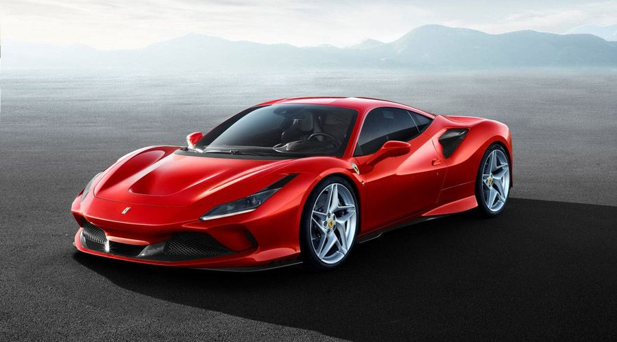
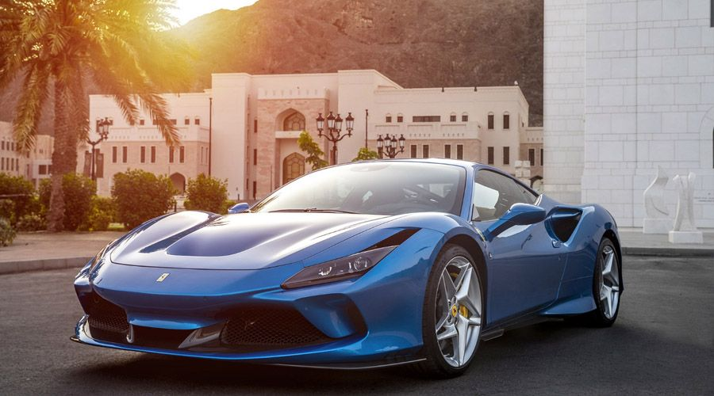
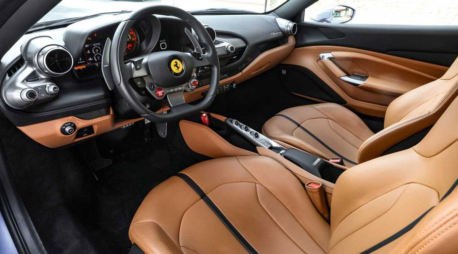
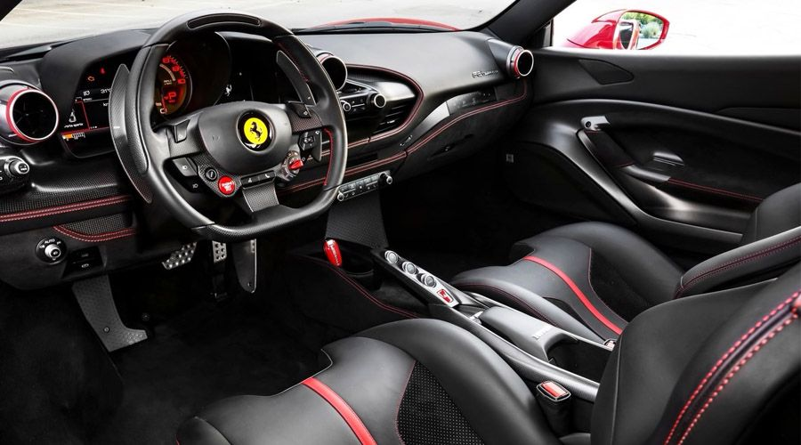

Cars

- درباره ماشین
- عکس های ماشین
- اطلاعات ماشین
درباره ماشین
فراری برای رقابت با مک لارن 720S اسپایدر مدل F8 اسپایدر را با پیشرانهی ۷۱۱ اسب بخاری رونمایی کرد. F8 اسپایدر از پیشرانهی تویین توربو V8 با حجم ۳.۹ لیتر استفاده میکند که میتواند ۷۱۱ اسببخار قدرت و ۷۷۰ نیوتنمتر گشتاور تولید کند. بهگفتهی فراری، این مدل برای رسیدن به سرعت ۱۰۰ کیلومتربرساعت تنها به ۲.۹ ثانیه زمان نیاز دارد و در ۸.۲ ثانیه نیز میتواند به سرعت ۲۰۰ کیلومتربرساعت دست پیدا کند. حداکثر سرعت محصول جذاب فراری نیز ۳۴۰ کیلومتربرساعت است.کمپانی فراری ایتالیا نخستین بار در سال 2019 در نمایشگاه خودرو ژنو سوپر استار جدید خود با توانمند ترین پیشرانه به صورت خورجینی با هشت سیلندر را با نام فراری F8 معرفی کرد که سبب شگفت زدگی همگان شد هر چند که قیمت پایه و دقیقی برای این اسپایدر در نظر گرفته نشده بود. این خودرو که F8 نام گذاری شده است برگرفته از حرف اول کلمه فراری و تعداد سیلندر های پیشرانه ان است.فراری GTC4 و فراری Portofino از دیگر هم خانواده های این سوپر استار جدید می باشد .فراری F8 طولی به اندازه 4611 میلی متر، عرضی به اندازه 1979 و ارتفاعی برابر با 1206 میلی متر دارد که همگی توسط مهندسان فراری طراحی شده اند که ترکیب هوشمند و زیبای بخش های مدل های کلاسیک، ایده های تازه طراح ها و نمونه های تک ساخت ویژه برای مشتریان خاص در ان به چشم می خورد.چراغ های فول ال ای دی در قسمت جلو خودرو به شکل افقی و نسبت به مدل های قبلی کوچک تر است و در بالای هر یک وروی هوا جهت خنک کردن دیسک های ترمز و محفظه چرخ تعبیه شده است. نمای عقب خودرو کاملا متفاوت از دیگر نسل های قبلی است چراغ های این قسمت به صورت دوتایی و به شکل دایره هستند.بال عقب، قوس گلگیر ها، دیفیوز و خروجی های هوا در بین چراغ و زیر ان ها دچار تغییرات فراوانی شده اند و فقط شکل قرار گیری و تعداد خروجی اگزوز ها است که هیچ تغییری نکرده است. رینگ های 20 اینچی خودرو نیز نمای جذاب تری به ان بخشیده است. سقف این خودرو خوش ساخت نیز به شکل باز شونده و به صورت برقی می باشد که در زمان 14 ثانیه می توانید ان را باز یا بسته نمایید همچنین در زمان حرکت خودرو نیز می توانید ان را باز و بسته کنید مشروط به این که حداکثر سرعت حرکت شما برابر با 45 کیلومتر بر ساعت باشد.
فرزند جدید کمپانی فراری فضای بار کوچکی در پشت صندلی ها دارد و همچنین یک صندوق 200 لیتری نیز در قسمت جلو خودرو دارد که برای وسایل های دو نفر کافی به نظر می رسید که در نهایت سبب کاربردی بودن این خودرو دلربا می باشد. داخل کابین F8 از هر گونه شلوغ کاری دور بوده و کاملا راننده محور طراحی شده است. چینش دکمه ها شکل تازه ای به خود گرفته اند و غریبلک فرمان نیز همانند داشبورد، خروجی های سیستم تهویه و نشانگر های پشت فرمان از طراحی جدید و نو برخوردار شده اند.اسب وحشی فراری این امکان را نیز به مشتریان خود می دهد تا برای تزیینات آلومینیومی داخل خودرو از نمونه های کربنی سفارش دهند همچنین مشترین می توانند یک صفحه نمایش مجزا بر روی داشبورد مخصوص سر نشین سفارش دهند و حتی می توانند از بین صندلی های مختلف با توجه به سلیقه خود یک مدل از ان را انتخاب کنند و امکان شخصی سازی تمامی بخش ها نیز به وسیله خریدار این سوپر استار ایتالیایی وجود دارد.این خودرو جذاب و رعد آسا بی شک از آپشن ها و امکانات فراوانی برخور دار است، که با استفاده از طراحی های نوین و تکنولوژی روز دنیا شکل گرفته اند. از تجهیزات و امکانات فراری F8 می توان به: سیستم تهویه هوای مطبوع، نمایشگر 7 اینچی لمسی، دکمه های کنترلی، کروز کنترل، سنسور باران، سقف باز شونده، اینه های جانبی با قابیت تا شوندگی برقی، اینه میانی الکترو کرومیک، پنل درب ها، پنل دسته دنده، سیستم هوشمند ضد لغزش، قابلیت تغییر حالت رانندگی، شیشه های برقی، سیستم نشان دهنده باد لاستیک ها، قابلیت تنظیم صندلی ها در چند جهت و ... اشاره کرد.قطعا فراری برای ساخت خودرو های خود از مواد اولیه با بالاترین کیفیت و کم ترین پلاستیک استفاده می کند و F8 نیز از این ماجرا مستثنا نیست و از کیفیت بسیار بالایی برخور دار است. قطعا راننده ای را نمی توانید بیابید که در پشت فرمان فراری F8 بنشیند و به فکر بازیگوشی و سرعت با این اسب رام نشدنی ایتالیایی نباشد . فراری F8 سیستم هوشمند ضد لغزش برای دیفرانسیل عقب دارد که پخش گشتاور تولید شده موتور را با در نظر داشتن عواملی همچون شتاب جانبی وارده و یا زاویه چرخش فرمان تنظیم می کند تا در هنگام پیچ ها با سرعت بالا دچار هیچ گونه مشکلی نشوید. فراری F8 از سیستم تعلیق و پایداری و چسبدنگی بسیار بالایی نیز برخوردار است و جهت امنیت بیشتر سر نشینان خود از انوع کیسه های هوا استفاده کرد است و شما می توانید با خیالی آسوده و بی نگرانی با هیجانی سر شار سوار این خودرو بی نظیر شوید و لذت ببرید.
فراری F8 موتوری با قدرت 720 اسب بخار در هر 8000 دور در هر دقیقه و حداکثر گشتاور برابر با 770 نیوتن متر در 3250 دور در هر دقیقه دارد و مجهز به هشت سیلندر و پیشرانه 3.9 لیتری خورجینی است F8 کاملا شبیه به مدل پیستا می باشد. این مدل 50 اسب بخار قدرت و 10 نیوتن بر متر گشتاور اضافه نسبت به مدل قبلی فراری دارد به عبارتی دیگر پیشرانه این خودرو به ازای یک لیتر از حجم خود 182 اسب بخار نیرو تولید می نماید و به این ترتیب در حال حاضر رکورد دار بیشترین توان مخصوص در بین خودرو های 8 سیلندر جهان به حساب می اید و همین امر سبب می شود تا این خودرو در طول 2.9 ثانیه از شتاب صفر و حالت سکون به شتاب 100 برسد همچنین F8 شتاب صفر تا 200 خود را نیز در زمان تقریبی 7.8 ثانیه پر می کند حداکثر سرعتی که با F8 می توان تجربه کرد برابر با 340 کیلومتر بر ساعت است. سیستم توربو فراری F8 به شکلی طراحی شده است که از همان شروع بی هیچ تاخیری به مدار وارد می شود و به وسیله حسگر پدال گاز میزان توان تولیدی ان قابل تنظیم می باشد. جعبه دنده ان از نوع مدل اف 1 به صور 7 سرعته دو کلاچه می باشد و خروجی پیشرانه با کمک دیفرانسیل الکترونیکی به چرخ های عقب خودرو منتقل می شود. خودرو F8 حدود 1435 کیلو گرم وزن دارد که تقسیم وزن ان به شکل 41.5 درصد در جلو و 58.5 درصد در عقب است. حجم باک این خودرو نیز برابر با 78 لیتر می باشد.فراری F8 این قابلیت را داشت که به خودرو خاص تری نیز تبدیل شود . این خودرو بسیار سریع و در عین حال بسیار توانا است که دلیل آن نقش مهم سیستم های الکترونیکی است هرچند که این خودرو بدون عیب و نقص نیست اما محصول برجسته ای از فراری می باشد که برای ارائه پرفورمنسی بسیار عالی، روش تکاملی را در پیش گرفته است و قیمت حدودی 203476 پوند دارد.تکامل دقیقاً همان چیزی است که F8 تریبوتو را توصیف میکند. اول از همه بیایید نگاهی به برگه مشخصات فنی بیندازیم. پیشرانهی ۸ سیلندر ۳.۹ لیتری این خودرو قدرت ۷۱۰ اسب بخاری دارد که ۴۹ واحد بیشتر از ۴۸۸ GTB بوده و گشتاور آن نیز ۷۷۰ نیوتون متر میباشد. این خودرو ۴۰ کیلوگرم سبکتر و ۱۰ درصد آئرودینامیک تر بوده و بدون ایجاد درگ اضافی داون فورس بیشتری تولید میکند. تمامی این موارد به معنی ثبت شتاب صفر تا ۱۰۰ کیلومتر در ساعت ۲.۹ ثانیهای است؛ اما مهمتر از شتاب اولیه باید به شتاب صفر تا ۲۰۰ کیلومتر در ساعت ۷.۸ ثانیهای و حداکثر سرعت ۳۴۰ کیلومتر در ساعتی اشاره کنیم.
   عکس های ماشین
اطلاعات ماشین
pawer car:
speed car:
400 km/h
model:
ferari f8
asb bokhar:
710
pishrane:
8 silandr 3.9 litry
shetab:
0 ta 200 km/h 7.8 saniyei
Asb bokhar:
vahed:
speed: